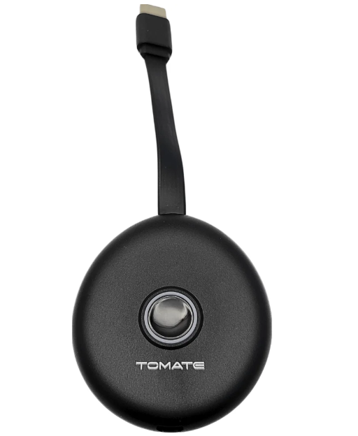
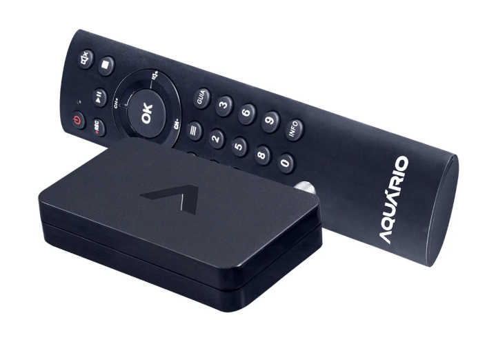

Marca : Tomate
R$ 85,55
Imagem Impecável: Desfrute de vídeos em Full HD 1080p com clareza e detalhes incríveis, sem perda de qualidade.
Liberdade Total: Transmita sem fios em até 30 metros, eliminando a bagunça de cabos e garantindo organização.
Instalação Simplificada: Conecte e use (Plug & Play) em segundos, sem drivers ou configurações complexas.
Marca: Xiaomi
R$R$ 399,00
Liberdade Total: Ultra compacto e alimentado pela TV, leve seu streaming favorito para qualquer lugar sem complicação.
Imagens Impecáveis: Desfrute de conteúdo em Full HD 1080p com desempenho fluido, graças ao processador potente.
Experiência Inteligente: Transforme sua TV com Android TV, Chromecast e controle tudo pela sua voz com Google Assistente.

Marca :Universal
R$ 24,41
Versatilidade Máxima: Unifique o controle da sua Smart TV (LED e LCD), eliminando a bagunça de múltiplos controles.
Entretenimento Instantâneo: Acesse Netflix e YouTube com botões dedicados, desfrutando seus conteúdos favoritos sem atrasos.
Instalação Simplificada: Configure seu controle em segundos com pesquisa automática ou por marca, para uso imediato e sem estresse.

Marca: Aquário
R$ 104,41
Qualidade Full HD: Desfrute de som e imagem em alta definição (1080p) em sua TV.
Entretenimento Versátil: Transforme sua TV em central de mídia para fotos, vídeos e músicas via USB.
Grave e Reviva: Não perca nada! Grave seus programas favoritos e acesse a grade de programação.
Fácil Instalação: Conecte facilmente a qualquer TV, antiga ou moderna, com cabos HDMI ou P2 RCA.

Marca: Intelbras
R$42,21
Imagem e Som HD: Desfrute de seus programas favoritos com a máxima qualidade de imagem e som digital, captando sinal em todas as direções.
Liberdade de Posicionamento: O cabo de 5 metros oferece flexibilidade para encontrar o ponto ideal de recepção de sinal.
Fixação Simplificada: A base com ímã permite fixar a antena facilmente em superfícies metálicas, de forma prática.
Instalação Rápida:Conecte em qualquer TV ou conversor e sintonize seus canais digitais em poucos minutos.